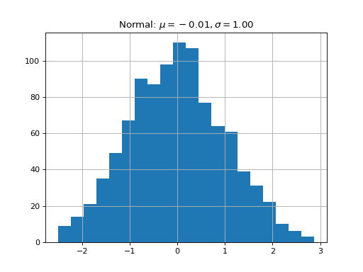
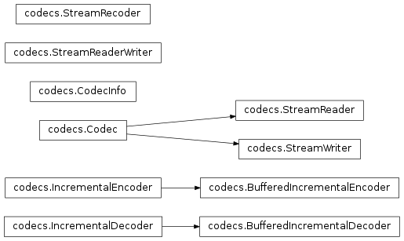

Sphinx extensions for embedded plots, math and more¶
(copied from the matplotlib demo)
Sphinx is written in python, and supports the ability to write custom
extensions. We’ve written a few for the matplotlib documentation,
some of which are part of matplotlib itself in the
matplotlib.sphinxext module, some of which are included only in the
sphinx doc directory, and there are other extensions written by other
groups, eg numpy and ipython. We’re collecting these in this tutorial
and showing you how to install and use them for your own project.
First let’s grab the python extension files from the sphinxext
directory from git, and install them in
our sampledoc project sphinxext directory:
home:~/tmp/sampledoc> mkdir sphinxext
home:~/tmp/sampledoc> cp ../sampledoc_tut/sphinxext/*.py sphinxext/
home:~/tmp/sampledoc> ls sphinxext/
apigen.py docscrape.py docscrape_sphinx.py numpydoc.py
In addition to the builtin matplotlib extensions for embedding pyplot plots and rendering math with matplotlib’s native math engine, we also have extensions for syntax highlighting ipython sessions, making inhertiance diagrams, and more.
We need to inform sphinx of our new extensions in the conf.py
file by adding the following. First we tell it where to find the extensions:
# If your extensions are in another directory, add it here. If the
# directory is relative to the documentation root, use
# os.path.abspath to make it absolute, like shown here.
sys.path.append(os.path.abspath('sphinxext'))
And then we tell it what extensions to load:
# Add any Sphinx extension module names here, as strings. They can be extensions
# coming with Sphinx (named 'sphinx.ext.*') or your custom ones.
extensions = ['matplotlib.sphinxext.only_directives',
'matplotlib.sphinxext.plot_directive',
'IPython.sphinxext.ipython_directive',
'IPython.sphinxext.ipython_console_highlighting',
'sphinx.ext.mathjax',
'sphinx.ext.autodoc',
'sphinx.ext.doctest',
'sphinx.ext.inheritance_diagram',
'numpydoc']
Now let’s look at some of these in action. You can see the literal source for this file at This file.
ipython sessions¶
Michael Droettboom contributed a sphinx extension which does pygments syntax highlighting on ipython sessions. Just use ipython as the
language in the sourcecode directive:
.. sourcecode:: ipython
In [69]: lines = plot([1,2,3])
In [70]: setp(lines)
alpha: float
animated: [True | False]
antialiased or aa: [True | False]
...snip
and you will get the syntax highlighted output below.
In [69]: lines = plot([1,2,3])
In [70]: setp(lines)
alpha: float
animated: [True | False]
antialiased or aa: [True | False]
...snip
This support is included in this template, but will also be included in a future version of Pygments by default.
Using math¶
- In sphinx you can include inline math :math:`xleftarrow yxforall
- yx-y` or display math
To include math in your document, just use the math directive; here is a simpler equation:
.. math::
W^{3\beta}_{\delta_1 \rho_1 \sigma_2} \approx U^{3\beta}_{\delta_1 \rho_1}
which is rendered as
Recent versions of Sphinx include built-in support for math. There are three flavors:
- sphinx.ext.pngmath: uses dvipng to render the equation
- sphinx.ext.mathjax: renders the math in the browser using Javascript
- sphinx.ext.jsmath: it’s an older code, but it checks out
Additionally, matplotlib has its own math support:
- matplotlib.sphinxext.mathmpl
See the matplotlib mathtext guide for lots more information on writing mathematical expressions in matplotlib.
Inserting matplotlib plots¶
Inserting automatically-generated plots is easy. Simply put the
script to generate the plot in the pyplots directory, and
refer to it using the plot directive. First make a
pyplots directory at the top level of your project (next to
:conf.py) and copy the ellipses.py` file into it:
home:~/tmp/sampledoc> mkdir pyplots
home:~/tmp/sampledoc> cp ../sampledoc_tut/pyplots/ellipses.py pyplots/
You can refer to this file in your sphinx documentation; by default it
will just inline the plot with links to the source and PF and high
resolution PNGS. To also include the source code for the plot in the
document, pass the include-source parameter:
.. plot:: pyplots/ellipses.py
:include-source:
In the HTML version of the document, the plot includes links to the original source code, a high-resolution PNG and a PDF. In the PDF version of the document, the plot is included as a scalable PDF.
(Source code, png, hires.png, pdf)
{kind=link}
{kind=link}

| include-source: |
(Source code, png, hires.png, pdf)

|
|---|
{kind=link}
{kind=link}
produces this output:
(Source code, png, hires.png, pdf)
{kind=link}
{kind=link}
See the matplotlib pyplot tutorial and the gallery for lots of examples of matplotlib plots.
Inheritance diagrams¶
Inheritance diagrams can be inserted directly into the document by
providing a list of class or module names to the
inheritance-diagram directive.
For example:
.. inheritance-diagram:: codecs
produces:
See the IPython Directive for a tutorial on embedding stateful, matplotlib aware ipython sessions into your rest docs with multiline and doctest support.
This file¶
.. _extensions:
***************************************************
Sphinx extensions for embedded plots, math and more
***************************************************
(copied from the `matplotlib demo <https://github.com/matplotlib/sampledoc>`_)
Sphinx is written in python, and supports the ability to write custom
extensions. We've written a few for the matplotlib documentation,
some of which are part of matplotlib itself in the
matplotlib.sphinxext module, some of which are included only in the
sphinx doc directory, and there are other extensions written by other
groups, eg numpy and ipython. We're collecting these in this tutorial
and showing you how to install and use them for your own project.
First let's grab the python extension files from the :file:`sphinxext`
directory from git, and install them in
our :file:`sampledoc` project :file:`sphinxext` directory::
home:~/tmp/sampledoc> mkdir sphinxext
home:~/tmp/sampledoc> cp ../sampledoc_tut/sphinxext/*.py sphinxext/
home:~/tmp/sampledoc> ls sphinxext/
apigen.py docscrape.py docscrape_sphinx.py numpydoc.py
In addition to the builtin matplotlib extensions for embedding pyplot
plots and rendering math with matplotlib's native math engine, we also
have extensions for syntax highlighting ipython sessions, making
inhertiance diagrams, and more.
We need to inform sphinx of our new extensions in the :file:`conf.py`
file by adding the following. First we tell it where to find the extensions::
# If your extensions are in another directory, add it here. If the
# directory is relative to the documentation root, use
# os.path.abspath to make it absolute, like shown here.
sys.path.append(os.path.abspath('sphinxext'))
And then we tell it what extensions to load::
# Add any Sphinx extension module names here, as strings. They can be extensions
# coming with Sphinx (named 'sphinx.ext.*') or your custom ones.
extensions = ['matplotlib.sphinxext.only_directives',
'matplotlib.sphinxext.plot_directive',
'IPython.sphinxext.ipython_directive',
'IPython.sphinxext.ipython_console_highlighting',
'sphinx.ext.mathjax',
'sphinx.ext.autodoc',
'sphinx.ext.doctest',
'sphinx.ext.inheritance_diagram',
'numpydoc']
Now let's look at some of these in action. You can see the literal
source for this file at :ref:`extensions-literal`.
.. _ipython-highlighting:
ipython sessions
================
Michael Droettboom contributed a sphinx extension which does `pygments
<http://pygments.org>`_ syntax highlighting on `ipython
<http://ipython.scipy.org>`_ sessions. Just use ipython as the
language in the ``sourcecode`` directive::
.. sourcecode:: ipython
In [69]: lines = plot([1,2,3])
In [70]: setp(lines)
alpha: float
animated: [True | False]
antialiased or aa: [True | False]
...snip
and you will get the syntax highlighted output below.
.. sourcecode:: ipython
In [69]: lines = plot([1,2,3])
In [70]: setp(lines)
alpha: float
animated: [True | False]
antialiased or aa: [True | False]
...snip
This support is included in this template, but will also be included
in a future version of Pygments by default.
.. _using-math:
Using math
==========
In sphinx you can include inline math :math:`x\leftarrow y\ x\forall
y\ x-y` or display math
.. math::
W^{3\beta}_{\delta_1 \rho_1 \sigma_2} = U^{3\beta}_{\delta_1 \rho_1} + \frac{1}{8 \pi 2} \int^{\alpha_2}_{\alpha_2} d \alpha^\prime_2 \left[\frac{ U^{2\beta}_{\delta_1 \rho_1} - \alpha^\prime_2U^{1\beta}_{\rho_1 \sigma_2} }{U^{0\beta}_{\rho_1 \sigma_2}}\right]
To include math in your document, just use the math directive; here is
a simpler equation::
.. math::
W^{3\beta}_{\delta_1 \rho_1 \sigma_2} \approx U^{3\beta}_{\delta_1 \rho_1}
which is rendered as
.. math::
W^{3\beta}_{\delta_1 \rho_1 \sigma_2} \approx U^{3\beta}_{\delta_1 \rho_1}
Recent versions of Sphinx include built-in support for math.
There are three flavors:
- sphinx.ext.pngmath: uses dvipng to render the equation
- sphinx.ext.mathjax: renders the math in the browser using Javascript
- sphinx.ext.jsmath: it's an older code, but it checks out
Additionally, matplotlib has its own math support:
- matplotlib.sphinxext.mathmpl
See the matplotlib `mathtext guide
<https://matplotlib.org/users/mathtext.html>`_ for lots
more information on writing mathematical expressions in matplotlib.
.. _pyplots:
Inserting matplotlib plots
==========================
Inserting automatically-generated plots is easy. Simply put the
script to generate the plot in the :file:`pyplots` directory, and
refer to it using the ``plot`` directive. First make a
:file:`pyplots` directory at the top level of your project (next to
:``conf.py``) and copy the :file:`ellipses.py`` file into it::
home:~/tmp/sampledoc> mkdir pyplots
home:~/tmp/sampledoc> cp ../sampledoc_tut/pyplots/ellipses.py pyplots/
You can refer to this file in your sphinx documentation; by default it
will just inline the plot with links to the source and PF and high
resolution PNGS. To also include the source code for the plot in the
document, pass the ``include-source`` parameter::
.. plot:: pyplots/ellipses.py
:include-source:
In the HTML version of the document, the plot includes links to the
original source code, a high-resolution PNG and a PDF. In the PDF
version of the document, the plot is included as a scalable PDF.
.. plot:: pyplots/ellipses.py
:include-source:
You can also inline code for plots directly, and the code will be
executed at documentation build time and the figure inserted into your
docs; the following code::
.. plot::
import matplotlib.pyplot as plt
import numpy as np
x = np.random.randn(1000)
plt.hist( x, 20)
plt.grid()
plt.title(r'Normal: $\mu=%.2f, \sigma=%.2f$'%(x.mean(), x.std()))
plt.show()
produces this output:
.. plot::
import matplotlib.pyplot as plt
import numpy as np
x = np.random.randn(1000)
plt.hist( x, 20)
plt.grid()
plt.title(r'Normal: $\mu=%.2f, \sigma=%.2f$'%(x.mean(), x.std()))
plt.show()
See the matplotlib `pyplot tutorial
<https://matplotlib.org/users/pyplot_tutorial.html>`_ and
the `gallery <https://matplotlib.org/gallery.html>`_ for
lots of examples of matplotlib plots.
Inheritance diagrams
====================
Inheritance diagrams can be inserted directly into the document by
providing a list of class or module names to the
``inheritance-diagram`` directive.
For example::
.. inheritance-diagram:: codecs
produces:
.. inheritance-diagram:: codecs
See the :ref:`ipython_directive` for a tutorial on embedding stateful,
matplotlib aware ipython sessions into your rest docs with multiline
and doctest support.
.. _extensions-literal:
This file
=========
.. literalinclude:: extensions.rst